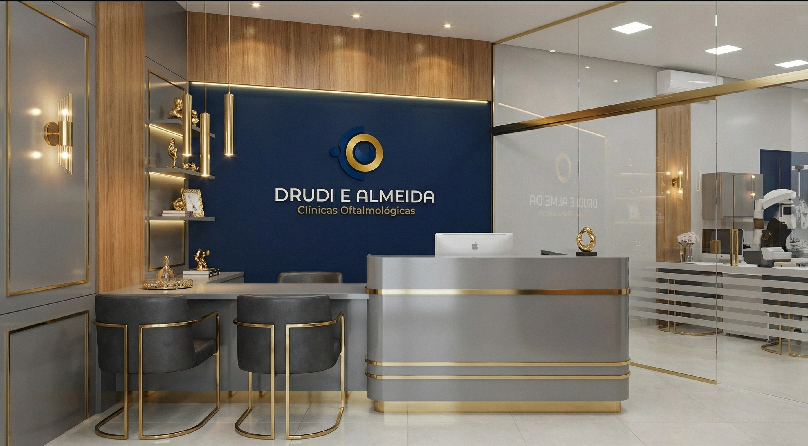
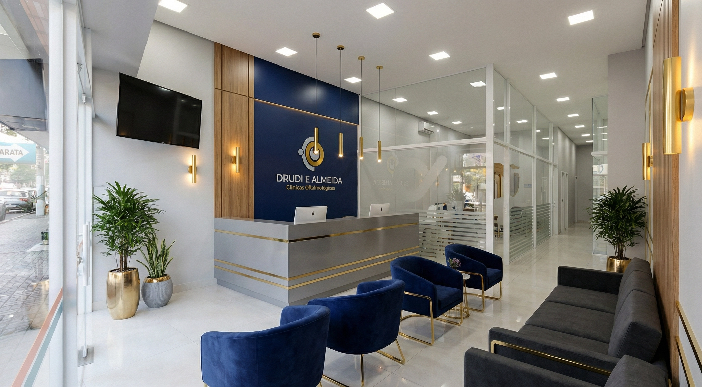
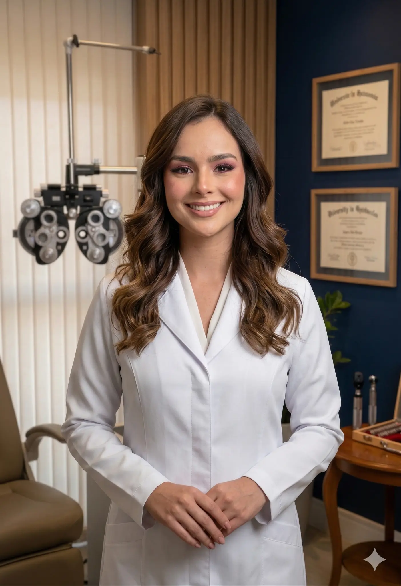
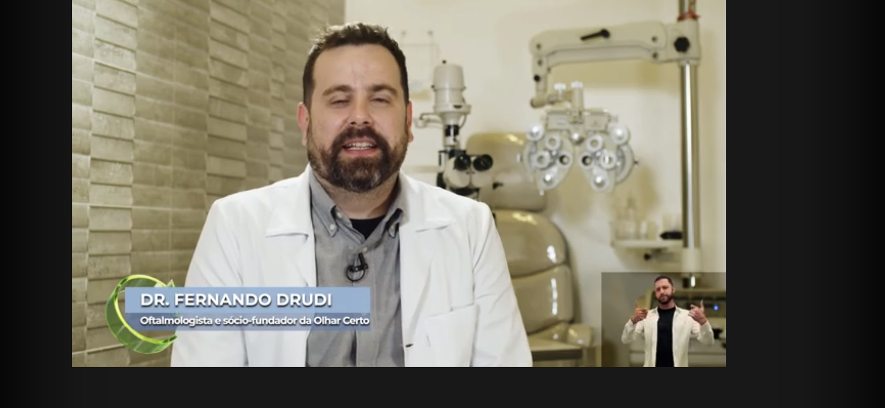
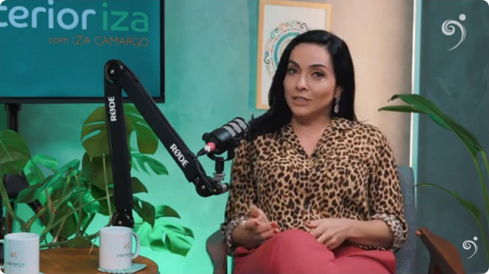
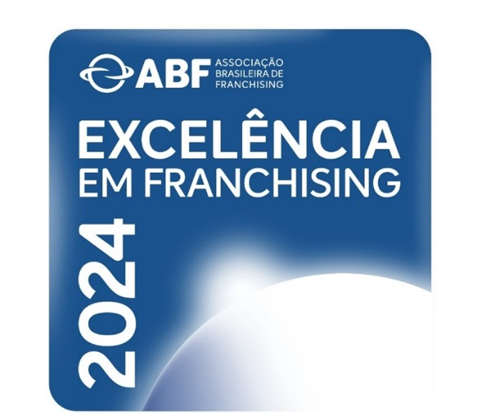
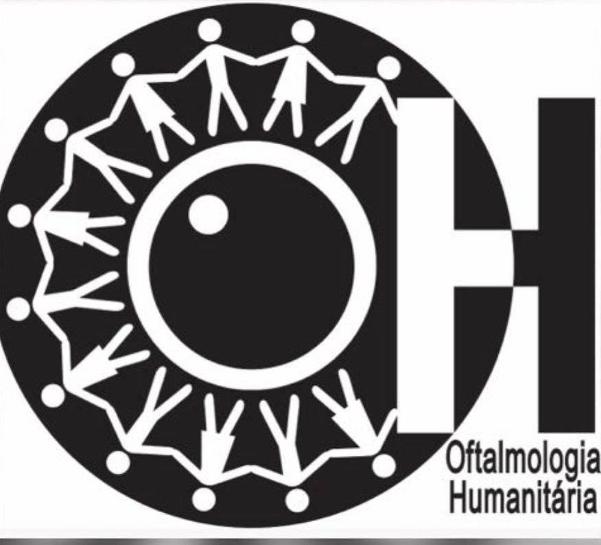

Recupere a clareza da sua visão com quem entende. Mais de 10 anos de experiência, tecnologia de ponta e atendimento humanizado em 5 unidades em São Paulo.

Oferecemos as técnicas mais avançadas em oftalmologia, com tecnologia de ponta e lentes premium.

Profissionais com mais de 10 anos de experiência, reconhecidos pela excelência e pelo atendimento humanizado.
Cirurgião Oftalmologista — CRM 000000
Fundador da Drudi e Almeida Clínicas Oftalmológicas, o Dr. Fernando Drudi é especialista em cirurgias de catarata, retina e vítreo, com mais de uma década de experiência e milhares de procedimentos realizados. Formado pelas melhores instituições do país, é reconhecido pelo compromisso inabalável com a acessibilidade e a excelência no atendimento oftalmológico.
À frente de 5 unidades em São Paulo, lidera uma equipe que combina tecnologia de ponta com um atendimento verdadeiramente humanizado. Sua visão empreendedora transformou a Drudi e Almeida em referência no setor, recebendo o Selo de Excelência em Franchising da ABF e a certificação Great Place to Work.
Condecorado como Amigo da Marinha pela SOAMAR Brasil por seu projeto humanitário de oftalmologia na Amazônia, levando cirurgias gratuitas e saúde ocular a comunidades ribeirinhas que não tinham acesso a atendimento especializado.

Cirurgiã Oftalmologista — CRM 000000
Cofundadora da Drudi e Almeida, a Dra. Priscilla Almeida é especialista em cirurgias refrativas, plástica ocular e estrabismo. Com técnica refinada e um olhar humanizado para cada paciente, é reconhecida como referência em empoderamento feminino na medicina oftalmológica.
Presença frequente em grandes veículos de comunicação como o Programa Mulheres (Gazeta), Você Bonita (Gazeta) e o Programa Interioriza, onde compartilha conhecimento sobre saúde ocular e prevenção com milhões de telespectadores, democratizando o acesso à informação de qualidade.
Defensora da oftalmologia preventiva e do acesso universal à saúde ocular, a Dra. Priscilla atua ativamente em campanhas de conscientização e projetos sociais que levam atendimento especializado a populações carentes.
Histórias reais de transformação e recuperação da visão.
"Meu procedimento de catarata foi rápido e indolor. Já no dia seguinte enxergava perfeitamente. A equipe foi muito profissional e atenciosa do início ao fim. Recomendo de olhos fechados!"
"Minha mãe tinha muito medo da cirurgia, mas o Dr. Fernando explicou tudo com paciência e carinho. Hoje ela enxerga cores que não via há anos. Somos eternamente gratos à equipe."
"Fiz a cirurgia refrativa e finalmente consegui me livrar dos óculos. O resultado superou todas as minhas expectativas. Atendimento humanizado de verdade, do começo ao fim."
Infraestrutura completa e ambiente acolhedor para o seu conforto.
Nossas clínicas foram projetadas com o mais alto padrão de qualidade, combinando tecnologia de ponta com um ambiente acolhedor. Cada detalhe foi pensado para que você se sinta seguro e confortável durante toda a sua jornada conosco.
Agendar ConsultaNossos especialistas são referência em grandes veículos de comunicação nacionais.

O Dr. Fernando compartilha sua experiência como oftalmologista e o impacto do projeto humanitário que leva cirurgias gratuitas a comunidades da Amazônia.

Participação ao vivo no quadro Correspondente Médico da CNN Brasil, abordando temas de saúde ocular e os avanços da oftalmologia moderna.

A Dra. Priscilla fala sobre as principais causas e tratamentos para olho seco, orientando o público sobre prevenção e cuidados com a saúde ocular.

Juntos, os fundadores da Drudi e Almeida levam saúde ocular ao interior de São Paulo, realizando atendimentos e cirurgias em regiões com acesso limitado.
Certificações que comprovam nosso compromisso com a excelência.

Excelência em Franchising 2024 — ABF
Great Place to Work 2024
Amigo da Marinha — SOAMAR Brasil

Oftalmologia Humanitária — Projeto Amazônia
Fale com nossa equipe pelo WhatsApp e receba o preço da sua cirurgia. Atendimento rápido e sem compromisso.
Receber Preço no WhatsApp